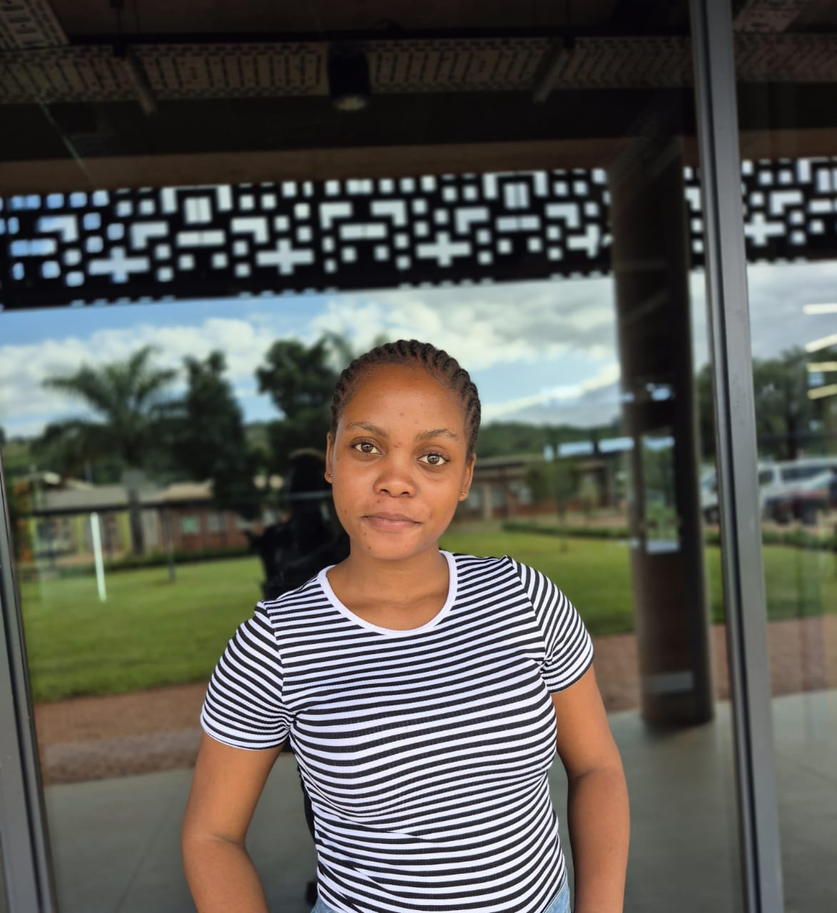

CEO
MANGANE KB
contact info 0791969189
SECRETARY
MAKHAVHU T
contact info 0795362789
MECHANIC

JUST NDLOVU
contact info 0799467129
At Dash mechanics , our mission is to deliver top-notch automotive services, exceeding customer expectations through our commitment to quality, integrity, and customer-centric approach. We strive to build long-lasting relationships with our clients, providing them with peace of mind and ensuring their vehicles run smoothly and safely. Our goal is to be the go-to destination for all automotive needs, where customers feel valued, respected, and satisfied with our services.
Our Team
Our team of experienced mechanics and technicians are passionate about what they do. They undergo regular training and certification to stay current with industry developments, ensuring that our customers receive the best possible service. Our team is dedicated to providing exceptional customer service, and we take pride in every vehicle that leaves our workshop.
contact info 0791969189
contact info 0795362789
contact info 0799467129